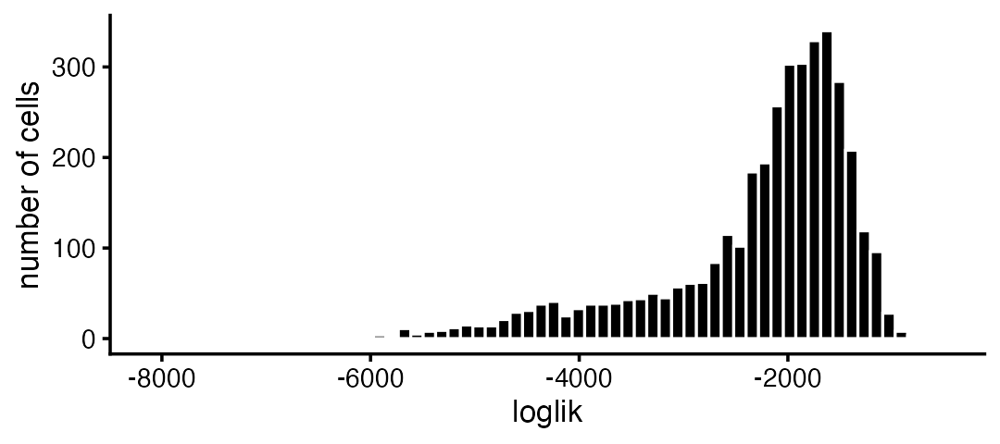
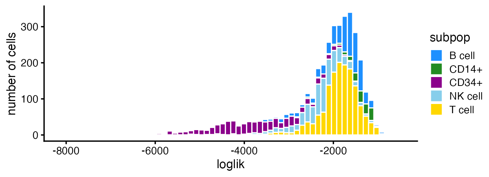
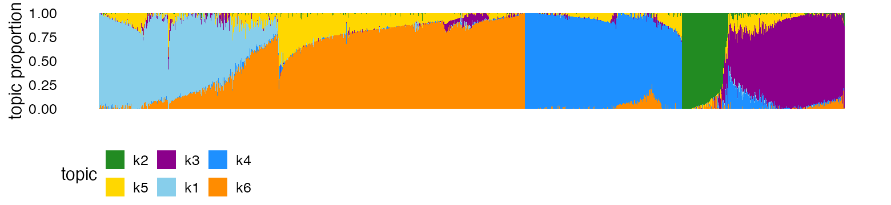
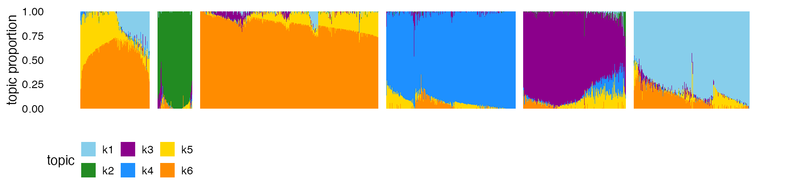
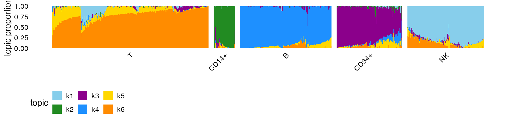
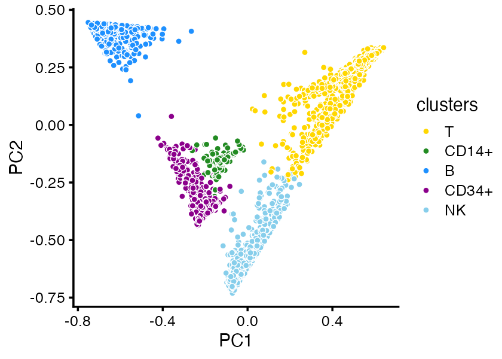
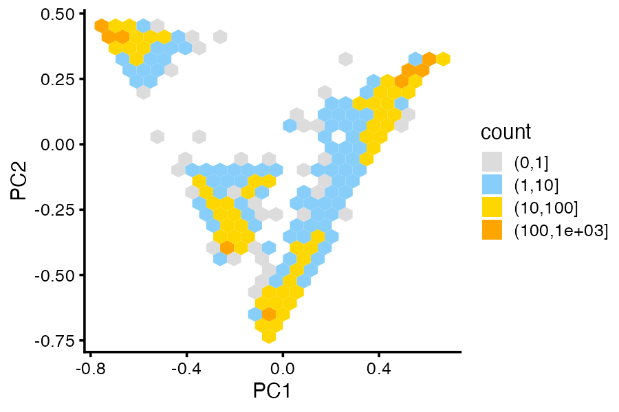

vignettes/single_cell_rnaseq_practical.Rmd
single_cell_rnaseq_practical.RmdThis vignette continues from Part 1, where we introduced the basic steps of a topic modeling analysis for single-cell data. Here we give more detailed guidance and discuss complications that may arise.
We begin our analysis by loading the packages. Then we set the seed so that the results can be reproduced.
Now we load the data set and the pre-fitted topic model.
data(pbmc_facs)
counts <- pbmc_facs$counts
fit <- pbmc_facs$fitThe topic model was fitted using the fit_topic_model
function. This function, as we mentioned, hides most of the complexities
of model fitting. Nevertheless, it is a good idea to check that the
model fitting has converged to a maximum-likelihood solution. This is
easily done with ‘fastTopics’:
plot_progress(fit,x = "iter",add.point.every = 10,colors = "black") +
theme_cowplot(font_size = 10)
# Warning: Using `size` aesthetic for lines was deprecated in ggplot2 3.4.0.
# ℹ Please use `linewidth` instead.
# ℹ The deprecated feature was likely used in the fastTopics package.
# Please report the issue at
# <https://github.com/stephenslab/fastTopics/issues>.
# This warning is displayed once every 8 hours.
# Call `lifecycle::last_lifecycle_warnings()` to see where this warning was
# generated.Internally, fit_topic_model first fits a non-negative
matrix factorization (NMF) to the count data, then converts the fitted
NMF to a topic model, so the plot shows the improvement in the model fit
over time. Judging by this plot, the parameter estimates get close to a
maxium-likelihood solution after about 150 updates.
For larger or more complex data sets, more updates may be needed to
obtain a good fit. For guidance, see help(fit_topic_model)
and help(fit_poisson_nmf).
The topic model can be used to calculate a likelihood for each cell:
loglik <- loglik_multinom_topic_model(counts,fit)This can be used to assess how well the topic model “fits” each cell.
pdat <- data.frame(loglik)
ggplot(pdat,aes(loglik)) +
geom_histogram(bins = 64,color = "white",fill = "black",size = 0.25) +
labs(y = "number of cells") +
theme_cowplot(font_size = 10)
# Warning in geom_histogram(bins = 64, color = "white", fill = "black", size =
# 0.25): Ignoring unknown parameters: `size`
Most of the poorly fit cells are in the CD34+ subpopulation:
subpop_colors <- c("dodgerblue","forestgreen","darkmagenta","skyblue","gold")
pdat <- data.frame(loglik = loglik,subpop = pbmc_facs$samples$subpop)
ggplot(pdat,aes(x = loglik,fill = subpop)) +
geom_histogram(bins = 64,color = "white",size = 0.25) +
scale_fill_manual(values = subpop_colors) +
labs(y = "number of cells") +
theme_cowplot(font_size = 10)
# Warning in geom_histogram(bins = 64, color = "white", size = 0.25):
# Ignoring unknown parameters: `size`
In [Part 1][single_cell_rnaseq_practical], we made use of additional information about the cells to help us interpret the topics. Even without the cell labels, the Structure plot can still be effective:
topic_colors <- c("skyblue","forestgreen","darkmagenta","dodgerblue",
"gold","darkorange")
structure_plot(fit,colors = topic_colors)
From this Structure plot, the topics clearly distinguish the B cells (dark blue), CD14+ monocytes (green) and CD34+ cells (purple). The NK cells (light blue) and T cells (cells high proportions of yellow and orange) are harder to distinguish, and this is reflected in sharing of topics (mostly topic 6) among NK and T cells.
Of course, without the cell labels, we cannot know that the topics correspond to these cell types without further downstream analyses—for this, we performed a GoM DE analysis (see Part 1).
In more complex data sets, some structure may not show up well without additional fine-tuning of the plot.
One simple strategy that often works well is to first identify clusters in the topic proportions matrix, . Here we use -means to identify clusters, but other methods could be used.
set.seed(1)
pca <- prcomp(fit$L)$x
clusters <- kmeans(pca,centers = 6,iter.max = 100)$cluster
summary(factor(clusters))
# 1 2 3 4 5 6
# 400 207 1047 797 616 707We chose 6 clusters, but to be clear the best number of clusters may not be the same as the number of topics.
Now we create another Structure plot in which the cells are grouped according to the clusters:
structure_plot(fit,topics = 1:6,colors = topic_colors,gap = 25,
grouping = clusters) +
theme(axis.text.x = element_blank())
k-means somewhat arbitrarily split the T cells (cells with high proportions of topics 5 and 6) into clusters 1 and 3. Therefore, we merge these two clusters:
clusters[clusters == 3] <- 1
clusters <- factor(clusters)We have found that visual inspection of the clusters followed by manual refinement is often be needed to get the “right” clustering.
Now we can label the clusters by these cell types in the plot. (Noting that this labeling is usually not possible until downstream analyses have been performed.)
levels(clusters) <- c("T","CD14+","B","CD34+","NK")
structure_plot(fit,topics = 1:6,colors = topic_colors,gap = 25,
grouping = clusters)
It is also sometimes helpful to visualize the structure in PCA plots which show the projection of the cells onto PCs of the topic proportions:
cluster_colors <- c("gold","forestgreen","dodgerblue","darkmagenta","skyblue")
pca_plot(fit,fill = clusters) +
scale_fill_manual(values = cluster_colors)
When there are many overlapping points, plotting the density can sometimes show the clusters more clearly:
pca_hexbin_plot(fit,bins = 24)
# Warning: `aes_()` was deprecated in ggplot2 3.0.0.
# ℹ Please use tidy evaluation idioms with `aes()`
# ℹ The deprecated feature was likely used in the fastTopics package.
# Please report the issue at
# <https://github.com/stephenslab/fastTopics/issues>.
# This warning is displayed once every 8 hours.
# Call `lifecycle::last_lifecycle_warnings()` to see where this warning was
# generated.
In Part
1, we performed a DE analysis using the topic model. (Note that
since the de_analysis output is quite large, we have made
the results of the DE analysis available outside the package.)
pbmc_facs_file <- tempfile(fileext = ".RData")
pbmc_facs_url <- "https://stephenslab.github.io/fastTopics/pbmc_facs.RData"
download.file(pbmc_facs_url,pbmc_facs_file)
load(pbmc_facs_file)When the volcano plot shows many overlapping differentially expressed
genes, it can be helpful to explore the results interactively. The
function volcano_plotly creates an interactive volcano
plot that can be viewed in a Web browser. For example, here is an
interactive volcano plot for the T cells topic:
genes <- pbmc_facs$genes
p <- volcano_plotly(pbmc_facs$de,k = 6,file = "volcano_plot_t_cells.html",
labels = genes$symbol,ymax = 100)This call creates a new file volcano_plot_t_cells.html.
The interactive volcano plot can also be viewed here,
or by calling print(p) in R.
This is the version of R and the packages that were used to generate these results.
sessionInfo()
# R version 4.3.3 (2024-02-29)
# Platform: aarch64-apple-darwin20 (64-bit)
# Running under: macOS 15.7.1
#
# Matrix products: default
# BLAS: /Library/Frameworks/R.framework/Versions/4.3-arm64/Resources/lib/libRblas.0.dylib
# LAPACK: /Library/Frameworks/R.framework/Versions/4.3-arm64/Resources/lib/libRlapack.dylib; LAPACK version 3.11.0
#
# locale:
# [1] en_US.UTF-8/en_US.UTF-8/en_US.UTF-8/C/en_US.UTF-8/en_US.UTF-8
#
# time zone: America/Chicago
# tzcode source: internal
#
# attached base packages:
# [1] stats graphics grDevices utils datasets methods base
#
# other attached packages:
# [1] cowplot_1.1.3 ggplot2_4.0.1 fastTopics_0.7-38 Matrix_1.6-5
#
# loaded via a namespace (and not attached):
# [1] gtable_0.3.6 xfun_0.52 bslib_0.9.0
# [4] htmlwidgets_1.6.4 ggrepel_0.9.6 lattice_0.22-5
# [7] crosstalk_1.2.1 quadprog_1.5-8 vctrs_0.6.5
# [10] tools_4.3.3 generics_0.1.4 parallel_4.3.3
# [13] tibble_3.3.0 pkgconfig_2.0.3 data.table_1.17.6
# [16] SQUAREM_2021.1 RColorBrewer_1.1-3 S7_0.2.0
# [19] desc_1.4.3 RcppParallel_5.1.10 lifecycle_1.0.4
# [22] truncnorm_1.0-9 stringr_1.5.1 compiler_4.3.3
# [25] farver_2.1.2 textshaping_0.3.7 progress_1.2.3
# [28] RhpcBLASctl_0.23-42 htmltools_0.5.8.1 sass_0.4.10
# [31] yaml_2.3.10 lazyeval_0.2.2 plotly_4.11.0
# [34] hexbin_1.28.5 pillar_1.11.0 pkgdown_2.2.0.9000
# [37] crayon_1.5.3 jquerylib_0.1.4 tidyr_1.3.1
# [40] uwot_0.2.3 cachem_1.1.0 gtools_3.9.5
# [43] tidyselect_1.2.1 digest_0.6.37 stringi_1.8.7
# [46] Rtsne_0.17 dplyr_1.1.4 reshape2_1.4.4
# [49] purrr_1.0.4 ashr_2.2-66 labeling_0.4.3
# [52] fastmap_1.2.0 grid_4.3.3 cli_3.6.5
# [55] invgamma_1.2 magrittr_2.0.3 dichromat_2.0-0.1
# [58] withr_3.0.2 prettyunits_1.2.0 scales_1.4.0
# [61] rmarkdown_2.29 httr_1.4.7 ragg_1.4.0
# [64] hms_1.1.3 pbapply_1.7-2 evaluate_1.0.4
# [67] knitr_1.50 irlba_2.3.5.1 viridisLite_0.4.2
# [70] rlang_1.1.6 Rcpp_1.1.0 mixsqp_0.3-54
# [73] glue_1.8.0 jsonlite_2.0.0 plyr_1.8.9
# [76] R6_2.6.1 systemfonts_1.2.3 fs_1.6.6